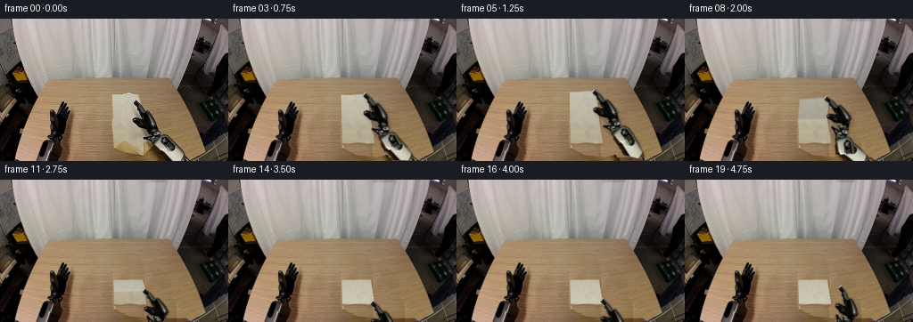
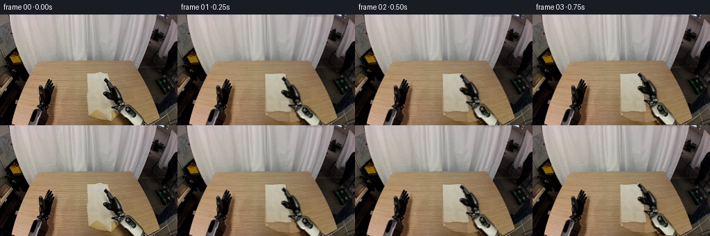
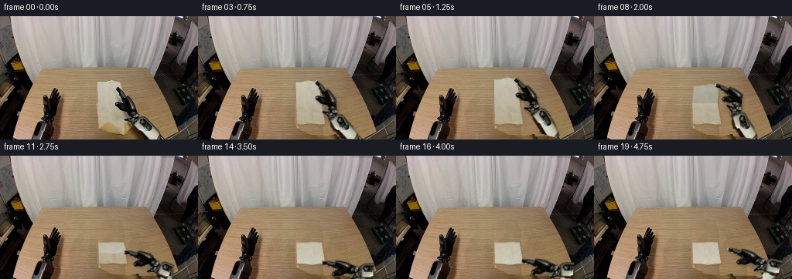

CODING AGENTS AS PIXEL WORLD MODELS
traex/GPT-6.1-Sol · common50_0029
点击播放 · 原生 RGB 像素
逐轮保存的候选
回放视频、检查图与代码变化。
每份候选均可单独播放。实际图片检查记录在下方工具轨迹中。
候选 01播放与检查图
点击播放 · 原生 RGB 像素


展开代码变化
--- 上一保存版本
+++ 本次保存版本
@@ -0,0 +1,259 @@
+from pathlib import Path
+import math
+import numpy as np
+from PIL import Image, ImageDraw, ImageFilter
+import cv2
+from scipy.ndimage import gaussian_filter
+import artifact_io
+
+ROOT=Path(__file__).resolve().parent
+S=4; H=160; W=256
+im=np.array(Image.open(ROOT/'first_frame.png').convert('RGB'))
+a=im.astype(float)
+Y,X=np.mgrid[:H,:W]
+
+def polygon(points, size=(W,H), scale=1):
+ out=Image.new('L',(size[0]*scale,size[1]*scale))
+ ImageDraw.Draw(out).polygon([(int(round(x*scale)),int(round(y*scale))) for x,y in points],fill=255)
+ return np.asarray(out)/255.
+
+def upscale(a, inter=cv2.INTER_CUBIC):
+ return cv2.resize(a,(W*S,H*S),interpolation=inter)
+
+# The visible manipulator is separated into rigid pieces with overlapping joints.
+arm_outline=[(152,90),(155,91),(160,99),(167,103),(174,110),(177,121),(182,128),(188,130),(194,134),(200,143),(205,151),(212,163),(225,182),(204,183),(184,157),(177,149),(172,144),(165,139),(160,136),(159,130),(155,124),(150,120),(148,116),(147,112),(150,110),(155,111),(153,105),(150,98),(148,95),(149,92)]
+inside=polygon(arm_outline)>0
+r,g,b=a.transpose(2,0,1);v=a.mean(2)
+wood=(r-g>16)&(g-b>20)
+fabric=(r-b>13)&(v>112)
+arm=inside & (~wood) & ((~fabric)|(Y>=140))
+# Include the dark perimeter and antialiased edge of the pale proximal link.
+arm|=(polygon([(180,143),(187,139),(202,148),(207,157),(211,168),(207,173),(185,152)])>0)
+arm[wood & (Y<141)]=False
+arm=arm.astype(float)
+
+B0=np.array([210.,172.]); E0=np.array([184.,140.]); Q0=np.array([169.,119.]); C0=np.array([152.,94.])
+vec=E0-Q0; cut=((X-Q0[0])*vec[0]+(Y-Q0[1])*vec[1])/(vec@vec)
+vec2=B0-E0;cut2=((X-E0[0])*vec2[0]+(Y-E0[1])*vec2[1])/(vec2@vec2)
+handmask=arm*(cut<.14)
+foremask=arm*(cut>-.13)*(cut2<.16)
+uppermask=arm*(cut2>-.10)
+# Broad wrist housing must move with the gripper rather than flex.
+handmask=arm*(cut<.18)
+foremask=arm*(cut>-.11)*(cut2<.14)
+uppermask=arm*(cut2>-.12)
+
+# Rebuild only newly exposed tabletop from same-row wood grain.
+clothpoly=[(125.5,85.5),(136,83.8),(144,83),(155.5,85.8),(159,114),(166,138.5),(162,141),(151,140.5),(141,139),(132,140),(126.5,138)]
+clothmask=polygon(clothpoly)
+remove=np.maximum(arm,clothmask)
+shadowmask=polygon([(125,133),(166,132),(179,151),(165,154),(146,152),(133,146)])
+remove=np.maximum(remove,shadowmask)
+# Fill arm fringes as well, but leave all other static objects untouched.
+remove=cv2.dilate((remove*255).astype('uint8'),np.ones((3,3),np.uint8))/255.
+woodbase=a.copy()
+for y in range(80,H):
+ left=np.arange(88,124)
+ valid=wood[y,left]
+ src=left[valid]
+ if len(src)<8: src=np.arange(90,120)
+ vals=a[y,src]
+ # Horizontal illumination is measured from untouched wood on both sides.
+ right=np.arange(174, min(234, int(204+(y-90)*.40)))
+ if len(right): right=right[wood[y,right] & (~inside[y,right])]
+ mean_l=np.median(vals,axis=0)
+ if len(right)>5:
+ mean_r=np.median(a[y,right],axis=0); slope=(mean_r-mean_l)/(np.median(right)-np.median(src))
+ else:
+ slope=np.array([-.14,-.13,-.12])
+ slope=np.clip(slope,-.5,.12)
+ # Existing non-learned grain sample, shifted and tiled along the wood grain.
+ for x in np.flatnonzero(remove[y]>.001):
+ sx=src[(x-126)%len(src)]
+ noise=a[y,sx]-mean_l
+ woodbase[y,x]=mean_l+slope*(x-np.median(src))+noise*.82
+# Smooth fill boundaries with a harmonic correction while retaining grain.
+mask=(remove>0)&(Y>=80)
+correction=np.zeros_like(a)
+for _ in range(140):
+ full=woodbase+correction
+ delta=a-full
+ outside=np.where(mask[...,None], correction, a-woodbase)
+ avg=(np.roll(outside,1,0)+np.roll(outside,-1,0)+np.roll(outside,1,1)+np.roll(outside,-1,1))*.25
+ correction[mask]=avg[mask]
+base=a.copy();base[mask]=(woodbase+correction)[mask]
+base=np.clip(base,0,255)
+
+# Recover a UV texture for the rectangular cloth from visible local RGB samples.
+TW,TH=128,192
+uu,vv=np.meshgrid(np.linspace(0,1,TW),np.linspace(0,1,TH))
+# Slightly uneven cotton hem, otherwise a consistent tabletop quadrilateral.
+def cloth_flat(u,v):
+ x=126.4+29*u+(1.6+7.0*u)*v
+ y=85.6+54*v + .45*np.sin(2*np.pi*u)*(1-v)+.6*np.sin(3*np.pi*u)*v**8
+ return x,y
+sx,sy=cloth_flat(uu,vv)
+tex=cv2.remap(im,sx.astype('float32'),sy.astype('float32'),cv2.INTER_LINEAR,borderMode=cv2.BORDER_REFLECT).astype(float)
+validtex=cv2.remap((1-arm).astype('float32'),sx.astype('float32'),sy.astype('float32'),cv2.INTER_LINEAR)>.95
+validtex &= (tex.mean(2)>143)&((tex[:,:,0]-tex[:,:,1])<20)
+for j in range(TH):
+ safe=np.flatnonzero(validtex[j] & (uu[j]<.63) & (uu[j]>.09))
+ if len(safe)<7: safe=np.arange(10,55)
+ mean=np.median(tex[j,safe],axis=0)
+ target=np.array([196.,193.,175.])*(1-.083*vv[j,0])
+ if tex[j,safe].mean()<150: mean=target
+ for k in range(TW):
+ if not validtex[j,k] or (uu[j,k]>.62 and tex[j,k].mean()<mean.mean()-9):
+ source=safe[k%len(safe)]
+ tex[j,k]=mean+(tex[j,source]-mean)*.66 + (uu[j,k]-.4)*np.array([-3,-3,-3])
+# Mild tonal smoothing on obscured fabric, retaining the original fine texture.
+tex=np.clip(tex,0,255)
+
+BASE=upscale(base)
+SRC=upscale(a)
+# Premultiplied RGB avoids copying any wooden fringe with moving links.
+sprites=[]
+for m in [uppermask,foremask,handmask]:
+ am=upscale(m,cv2.INTER_LINEAR)
+ sprites.append((upscale(a*m[...,None]),am))
+
+# Actual three-dimensional link lengths stay constant; only projection changes.
+B3=np.r_[B0,0.]; E3=np.r_[E0,34.]; Q3=np.r_[Q0,54.]
+L1=np.linalg.norm(E3-B3);L2=np.linalg.norm(Q3-E3)
+u0=(Q3-B3)/np.linalg.norm(Q3-B3)
+perp0=E3-B3-u0*np.dot(E3-B3,u0);perp0/=np.linalg.norm(perp0)
+
+def smooth(t):
+ t=np.clip(t,0,1);return t*t*(3-2*t)
+
+def rot(phi):
+ return np.array([[np.cos(phi),-np.sin(phi)],[np.sin(phi),np.cos(phi)]])
+
+def IK(q):
+ d=np.linalg.norm(q-B3);u=(q-B3)/d
+ aa=(L1*L1-L2*L2+d*d)/(2*d)
+ h=math.sqrt(max(0,L1*L1-aa*aa))
+ n=perp0-u*np.dot(perp0,u); n/=np.linalg.norm(n)
+ return B3+aa*u+h*n
+
+def link_affine(old1,old2,new1,new2):
+ v=old2-old1; w=new2-new1
+ vo=v/np.linalg.norm(v);wn=w/np.linalg.norm(w)
+ pv=np.array([-vo[1],vo[0]]);pw=np.array([-wn[1],wn[0]])
+ A=np.outer(wn,vo)*(np.linalg.norm(w)/np.linalg.norm(v))+np.outer(pw,pv)
+ t=new1-A@old1
+ return np.c_[A,t*S]
+
+def hand_affine(q,phi):
+ A=rot(phi);return np.c_[A,(q-A@Q0)*S]
+
+def warp_sprite(canvas,sprite,M):
+ rgb,al=sprite
+ p=cv2.warpAffine(rgb,M,(W*S,H*S),flags=cv2.INTER_LINEAR,borderMode=cv2.BORDER_CONSTANT)
+ m=cv2.warpAffine(al,M,(W*S,H*S),flags=cv2.INTER_LINEAR,borderMode=cv2.BORDER_CONSTANT)
+ return canvas*(1-m[...,None])+p
+
+# Triangulated material-space surface rendered using inverse affine RGB sampling.
+def cloth_points(u,v,theta,flap=False):
+ px,py=cloth_flat(u,v)
+ if flap:
+ hx,hy=cloth_flat(u,np.full_like(v,.5))
+ d=.5-v
+ bend=.16*np.sin(theta)*np.sin(2*np.pi*v)
+ ang=theta+bend
+ z=18.5*(2*d)*np.sin(ang)
+ # A slight projected depth displacement, with no sliding hinge.
+ px=hx+(px-hx)*np.cos(ang)+1.8*(2*d)*np.sin(ang)
+ py=hy+(py-hy)*np.cos(ang)-z
+ # Cotton sags gently between the pinch and the far edge.
+ py+=1.7*np.sin(theta)*(1-u)**1.5*(2*d)**.6
+ return np.stack([px,py],-1)*S
+
+def surface(theta,flap):
+ us=np.linspace(0,1,15);vs=np.linspace(0,.5,17) if flap else np.linspace(.5,1,17)
+ U,V=np.meshgrid(us,vs)
+ dst=cloth_points(U,V,theta,flap)
+ src=np.stack([U*(TW-1),V*(TH-1)],-1)
+ mx=np.full((H*S,W*S),-1,dtype=np.float32);my=mx.copy();alpha=np.zeros_like(mx)
+ for j in range(len(vs)-1):
+ for k in range(len(us)-1):
+ for inds in [[(j,k),(j,k+1),(j+1,k+1)],[(j,k),(j+1,k+1),(j+1,k)]]:
+ d=np.array([dst[i] for i in inds],dtype=np.float32);s=np.array([src[i] for i in inds],dtype=np.float32)
+ x0=max(0,int(np.floor(d[:,0].min())));x1=min(W*S,int(np.ceil(d[:,0].max()))+1)
+ y0=max(0,int(np.floor(d[:,1].min())));y1=min(H*S,int(np.ceil(d[:,1].max()))+1)
+ if x1<=x0 or y1<=y0:continue
+ M=cv2.getAffineTransform(d,s)
+ yy,xx=np.mgrid[y0:y1,x0:x1].astype(float)
+ tri=np.zeros((y1-y0,x1-x0),np.uint8)
+ cv2.fillConvexPoly(tri,np.round(d-[x0,y0]).astype(np.int32),255)
+ use=tri>0
+ tx=M[0,0]*xx+M[0,1]*yy+M[0,2];ty=M[1,0]*xx+M[1,1]*yy+M[1,2]
+ mx[y0:y1,x0:x1][use]=tx[use];my[y0:y1,x0:x1][use]=ty[use];alpha[y0:y1,x0:x1][use]=1
+ rgb=cv2.remap(tex.astype('float32'),mx,my,cv2.INTER_LINEAR,borderMode=cv2.BORDER_REPLICATE)
+ if flap:
+ shade=1-.135*np.sin(theta)**2+.017*(-np.cos(theta)+1)
+ rgb*=shade
+ # The fold ridge catches light, unlike the hanging face.
+ ridge=np.exp(-((my/(TH-1)-.5)/.025)**2)*np.sin(theta)*2.5
+ rgb+=ridge[...,None]
+ return rgb.astype(float),alpha
+
+frames=[im.copy()]
+trajectory=[]
+for i in range(1,20):
+ reach=smooth(i/3)
+ f=smooth((i-3)/11)
+ theta=np.pi*f
+ if i<=3:
+ c=C0+(np.array([153.7,86.1])-C0)*reach
+ phi=-.055*reach
+ else:
+ p=cloth_points(np.array(.94),np.array(.015),theta,True)/S
+ c=p+np.array([.3,.1])
+ phi=-.055-.11*np.sin(theta)
+ if i>=15:
+ release=smooth((i-15)/4)
+ c+=np.array([13.,-17.])*release
+ phi+=.22*release
+ q=c+rot(phi)@(Q0-C0)
+ qz=54-10*reach-13*f
+ e=IK(np.r_[q,qz])[:2]
+ bottom,bm=surface(theta,False)
+ top,tm=surface(theta,True)
+ canvas=BASE.copy()
+ # Contact shadow on the tabletop, lifted cloth produces a softer cast shadow.
+ clothalpha=np.maximum(bm,tm)
+ sh=cv2.GaussianBlur(clothalpha,(0,0),1.1*S)
+ sh=np.roll(sh,2*S,axis=0);sh=np.roll(sh,1*S,axis=1)
+ canvas*=1-.135*sh[...,None]
+ canvas=canvas*(1-bm[...,None])+bottom*bm[...,None]
+ canvas=canvas*(1-tm[...,None])+top*tm[...,None]
+ # Fine hem line of the folded layer. Its extent is tied to surface geometry.
+ if theta>.15:
+ points=cloth_points(np.linspace(0,1,50),np.full(50,.008),theta,True)
+ hem=np.zeros((H*S,W*S),np.uint8)
+ cv2.polylines(hem,[np.round(points).astype(np.int32)],False,255,1)
+ mh=hem.astype(float)/255
+ canvas=canvas*(1-.19*mh[...,None])
+ # Manipulator shadow shifts with the rigid links, but no scene/camera drift.
+ Ms=[link_affine(B0,E0,B0,e),link_affine(E0,Q0,e,q),hand_affine(q,phi)]
+ arm_alpha=np.zeros((H*S,W*S))
+ for sp,M in zip(sprites,Ms):
+ arm_alpha=np.maximum(arm_alpha,cv2.warpAffine(sp[1],M,(W*S,H*S)))
+ cast=cv2.GaussianBlur(arm_alpha,(0,0),1.5*S)
+ cast=np.roll(np.roll(cast,3*S,0),2*S,1)
+ canvas*=1-.115*cast[...,None]
+ for sp,M in zip(sprites,Ms): canvas=warp_sprite(canvas,sp,M)
+ frame=np.clip(cv2.resize(canvas,(W,H),interpolation=cv2.INTER_AREA),0,255).round().astype('uint8')
+ # No frame-zero resampling: it remains exactly equal to the provided RGB array.
+ frames.append(frame)
+ trajectory.append([i,*c,*q,*e,qz,theta])
+
+frames=np.stack(frames).astype(np.uint8)
+np.save(ROOT/'diagnostics'/'trajectory.npy',np.array(trajectory))
+Image.fromarray(np.clip(base,0,255).astype('uint8')).save(ROOT/'diagnostics'/'restored_table.png')
+Image.fromarray((arm*255).astype('uint8')).save(ROOT/'diagnostics'/'arm_mask.png')
+Image.fromarray(tex.astype('uint8')).save(ROOT/'diagnostics'/'cloth_texture.png')
+artifact_io.save(frames,ROOT)
+print('Saved',frames.shape, 'first frame exact:',np.array_equal(frames[0],im))
+print(np.array(trajectory).round(2))
候选 02播放与检查图
点击播放 · 原生 RGB 像素

展开代码变化
--- 上一保存版本
+++ 本次保存版本
@@ -90,7 +90,7 @@
# Slightly uneven cotton hem, otherwise a consistent tabletop quadrilateral.
def cloth_flat(u,v):
x=126.4+29*u+(1.6+7.0*u)*v
- y=85.6+54*v + .45*np.sin(2*np.pi*u)*(1-v)+.6*np.sin(3*np.pi*u)*v**8
+ y=85.6+54*v-2.1*np.exp(-((u-.53)/.22)**2)*(1-v)**4 + .45*np.sin(2*np.pi*u)*(1-v)+.6*np.sin(3*np.pi*u)*v**8
return x,y
sx,sy=cloth_flat(uu,vv)
tex=cv2.remap(im,sx.astype('float32'),sy.astype('float32'),cv2.INTER_LINEAR,borderMode=cv2.BORDER_REFLECT).astype(float)
@@ -129,11 +129,13 @@
def rot(phi):
return np.array([[np.cos(phi),-np.sin(phi)],[np.sin(phi),np.cos(phi)]])
-def IK(q):
+def IK(q, swivel=0):
d=np.linalg.norm(q-B3);u=(q-B3)/d
aa=(L1*L1-L2*L2+d*d)/(2*d)
h=math.sqrt(max(0,L1*L1-aa*aa))
n=perp0-u*np.dot(perp0,u); n/=np.linalg.norm(n)
+ nr=np.array([1.,0.,0.]); nr-=u*np.dot(nr,u); nr/=np.linalg.norm(nr)
+ n=n*(1-swivel)+nr*swivel; n/=np.linalg.norm(n)
return B3+aa*u+h*n
def link_affine(old1,old2,new1,new2):
@@ -210,14 +212,14 @@
else:
p=cloth_points(np.array(.94),np.array(.015),theta,True)/S
c=p+np.array([.3,.1])
- phi=-.055-.11*np.sin(theta)
+ phi=-.055-.72*f-.12*np.sin(theta)
if i>=15:
release=smooth((i-15)/4)
c+=np.array([13.,-17.])*release
- phi+=.22*release
+ phi+=.12*release
q=c+rot(phi)@(Q0-C0)
- qz=54-10*reach-13*f
- e=IK(np.r_[q,qz])[:2]
+ qz=54-10*reach-13*f-7*np.sin(theta)
+ e=IK(np.r_[q,qz],.70*f)[:2]
bottom,bm=surface(theta,False)
top,tm=surface(theta,True)
canvas=BASE.copy()
@@ -246,6 +248,9 @@
for sp,M in zip(sprites,Ms): canvas=warp_sprite(canvas,sp,M)
frame=np.clip(cv2.resize(canvas,(W,H),interpolation=cv2.INTER_AREA),0,255).round().astype('uint8')
# No frame-zero resampling: it remains exactly equal to the provided RGB array.
+ edit=upscale(remove,cv2.INTER_LINEAR)+clothalpha+sh+arm_alpha+cast
+ edit=cv2.dilate((cv2.resize(edit,(W,H),interpolation=cv2.INTER_AREA)>.002).astype(np.uint8),np.ones((3,3),np.uint8))>0
+ frame[~edit]=im[~edit]
frames.append(frame)
trajectory.append([i,*c,*q,*e,qz,theta])
候选 03播放与检查图
点击播放 · 原生 RGB 像素

展开代码变化
--- 上一保存版本
+++ 本次保存版本
@@ -214,7 +214,7 @@
c=p+np.array([.3,.1])
phi=-.055-.72*f-.12*np.sin(theta)
if i>=15:
- release=smooth((i-15)/4)
+ release=smooth((i-15)/3)
c+=np.array([13.,-17.])*release
phi+=.12*release
q=c+rot(phi)@(Q0-C0)
候选 04播放与检查图
点击播放 · 原生 RGB 像素
展开代码变化
--- 上一保存版本
+++ 本次保存版本
@@ -218,7 +218,7 @@
c+=np.array([13.,-17.])*release
phi+=.12*release
q=c+rot(phi)@(Q0-C0)
- qz=54-10*reach-13*f-7*np.sin(theta)
+ qz=54-10*reach-13*f-10*np.sin(theta)
e=IK(np.r_[q,qz],.70*f)[:2]
bottom,bm=surface(theta,False)
top,tm=surface(theta,True)
@@ -226,7 +226,7 @@
# Contact shadow on the tabletop, lifted cloth produces a softer cast shadow.
clothalpha=np.maximum(bm,tm)
sh=cv2.GaussianBlur(clothalpha,(0,0),1.1*S)
- sh=np.roll(sh,2*S,axis=0);sh=np.roll(sh,1*S,axis=1)
+ sh=cv2.warpAffine(sh,np.float32([[1,0,S],[0,1,2*S]]),(W*S,H*S))
canvas*=1-.135*sh[...,None]
canvas=canvas*(1-bm[...,None])+bottom*bm[...,None]
canvas=canvas*(1-tm[...,None])+top*tm[...,None]
@@ -243,7 +243,7 @@
for sp,M in zip(sprites,Ms):
arm_alpha=np.maximum(arm_alpha,cv2.warpAffine(sp[1],M,(W*S,H*S)))
cast=cv2.GaussianBlur(arm_alpha,(0,0),1.5*S)
- cast=np.roll(np.roll(cast,3*S,0),2*S,1)
+ cast=cv2.warpAffine(cast,np.float32([[1,0,2*S],[0,1,3*S]]),(W*S,H*S))
canvas*=1-.115*cast[...,None]
for sp,M in zip(sprites,Ms): canvas=warp_sprite(canvas,sp,M)
frame=np.clip(cv2.resize(canvas,(W,H),interpolation=cv2.INTER_AREA),0,255).round().astype('uint8')
@@ -260,5 +260,9 @@
Image.fromarray((arm*255).astype('uint8')).save(ROOT/'diagnostics'/'arm_mask.png')
Image.fromarray(tex.astype('uint8')).save(ROOT/'diagnostics'/'cloth_texture.png')
artifact_io.save(frames,ROOT)
+writer=cv2.VideoWriter(str(ROOT/'video.mp4'),cv2.VideoWriter_fourcc(*'mp4v'),4,(W,H))
+if writer.isOpened():
+ for frame in frames: writer.write(cv2.cvtColor(frame,cv2.COLOR_RGB2BGR))
+ writer.release()
print('Saved',frames.shape, 'first frame exact:',np.array_equal(frames[0],im))
print(np.array(trajectory).round(2))
候选 05播放与检查图
候选 06播放与检查图
可观测工具轨迹
实际执行的命令与返回图片。
命令 1exit 0
/bin/bash -lc 'ls -la; cat prompt.txt; cat GENERATION_RULES.md'
命令 2exit 0
/bin/bash -lc "cat task_spec.json; cat artifact_io.py; python - <<'PY'
from PIL import Image
import numpy as np
im=np.array(Image.open('first_frame.png')); print(im.shape)
# representative palette for reduced ascii map
pal=np.array([[30,30,30],[70,70,70],[115,115,115],[165,165,165],[220,220,220],[242,242,242],[170,120,70],[120,80,45],[210,175,120],[80,100,135],[30,60,95],[180,60,60]])
chars=' .:+#@owbBRX'
a=np.array(Image.open('first_frame.png').resize((128,80)))
for row in a:
inds=((row[:,None,:].astype(float)-pal[None,:,:])**2).sum(2).argmin(1)
print(''.join(chars[i] for i in inds))
PY"命令 3exit 0
/bin/bash -lc "python - <<'PY'
from PIL import Image
import numpy as np
im=np.array(Image.open('first_frame.png'))
for y in [65,70,75,80,85,90,95,100,105,110,115,120,125,130,135,140,145,150]:
print('\\ny',y)
print(' '.join('%d:%s'%(x,','.join(map(str,im[y,x]))) for x in range(25,231,5)))
# grid rgb classes crop
for y in range(65,160):
row=''
for x in range(15,215):
r,g,b=map(int,im[y,x]); v=(r+g+b)/3
if r>g*1.19 and g>b*1.20: c='t' if v>110 else 'd'
elif r>b*1.16 and g>b*1.10 and v>100:c='c'
elif v>220:c='W'
elif v>185:c='O'
elif v>150:c='o'
elif v>120:c='+'
elif v>90:c=':'
elif v>60:c='.'
elif v>30:c='-'
else:c=' '
row+=c
print(f'{y:03}',row)
PY"命令 4exit 0
/bin/bash -lc "python - <<'PY'
import importlib.util
for m in ['numpy','PIL','scipy','cv2']:
print(m, bool(importlib.util.find_spec(m)))
import numpy as np
from PIL import Image
im=np.array(Image.open('first_frame.png'))
# crop detailed shades. wood hue coded t; fabric beige coded digit of brightness; robot grayscale letter of brightness
for y in range(80,160):
row=''
for x in range(115,217):
r,g,b=map(int,im[y,x]); v=(r+g+b)/3
if r-g>16 and g-b>20:c='~'
elif r-b>13 and v>110:c=str(min(9,int(v//25)))
elif v>210:c='W'
elif v>180:c='O'
elif v>150:c='o'
elif v>120:c='+'
elif v>90:c=':'
elif v>60:c='.'
elif v>30:c='-'
else:c=' '
row+=c
print(f'{y:03}',row)
print(' '+''.join(str(x//10%10) for x in range(115,217)))
print(' '+''.join(str(x%10) for x in range(115,217)))
PY"命令 5exit 0
/bin/bash -lc "python - <<'PY'
import numpy as np
from PIL import Image
im=np.array(Image.open('first_frame.png'))
for y in range(85,160):
print('%3d'%y,end=' ')
for x in range(140,222):
r,g,b=map(int,im[y,x]); v=(r+g+b)/3
# wood vs cloth vs grayscale
if r-g>=15 and g-b>=20:c='~'
elif r-b>13 and v>110:c='c'
elif v>210:c='W'
elif v>180:c='O'
elif v>150:c='o'
elif v>120:c='+'
elif v>90:c=':'
elif v>60:c='.'
elif v>30:c='-'
else:c=' '
print(c,end='')
print()
print(' '+''.join(str(x//10%10) for x in range(140,222)))
print(' '+''.join(str(x%10) for x in range(140,222)))
PY"命令 6exit 0
/bin/bash -lc "python - <<'PY'
import numpy as np
from PIL import Image
im=np.array(Image.open('first_frame.png'))
# detailed gray values robot crop to identify edges
for y in range(90,160):
print(f'{y:03} ',end='')
for x in range(146,210):
r,g,b=map(int,im[y,x]);v=(r+g+b)/3
if r-g>16 and g-b>20:c='~'
elif r-b>13 and v>110:c='c'
else:c='0123456789'[min(9,int(v/25.6))]
print(c,end='')
print()
PY"命令 7exit 0
/bin/bash -lc "python - <<'PY'
from PIL import Image
import numpy as np
im=np.array(Image.open('first_frame.png')).astype(int)
for y in range(87,160):
pts=[]
for x in range(145,223):
r,g,b=im[y,x];v=(r+g+b)/3
iswood=r-g>=17 and g-b>=21
iscloth=r-b>=14 and v>=115
if not iswood and not iscloth: pts.append(x)
pts=[x for x in pts if x<200+(y-90)*.42]
# contiguous runs
runs=[]
for x in pts:
if not runs or x>runs[-1][1]+1:runs.append([x,x])
else:runs[-1][1]=x
print(y,runs)
PY"命令 8exit 0
/bin/bash -lc "python - <<'PY'
from PIL import Image
import numpy as np
im=np.array(Image.open('first_frame.png'))
# entire lower portion at full resolution letter restricted classes
for y in range(85,160,2):
print(f'{y:03} ',end='')
for x in range(20,240):
r,g,b=map(int,im[y,x]);v=(r+g+b)/3
if r-g>16 and g-b>20:c='~'
elif r-b>13 and v>110:c='c'
elif v>210:c='W'
elif v>180:c='O'
elif v>150:c='o'
elif v>120:c='+'
elif v>90:c=':'
elif v>60:c='.'
elif v>30:c='-'
else:c=' '
print(c,end='')
print()
print(' '+''.join(str(x//10%10) for x in range(20,240)))
PY"命令 9exit 0
/bin/bash -lc "python - <<'PY'
from PIL import Image
import numpy as np
im=np.array(Image.open('first_frame.png'))
for y in range(132,153,2):
print(y,' '.join('%d:%d,%d,%d'%(x,*im[y,x]) for x in range(124,171,3)))
PY"命令 10exit 0
/bin/bash -lc "python - <<'PY' import numpy as np B=np.array([208.,178]); E=np.array([180.,136]); W=np.array([163.,119]);C=np.array([152.,94]);l1=np.linalg.norm(E-B);l2=np.linalg.norm(W-E) for th in np.linspace(0,np.pi,11): c=np.array([154+12*np.sin(th)+3.5*(1-np.cos(th)),117-23*np.cos(th)-14*np.sin(th)]);w=c+(W-C); print(th.round(2),c.round(1),np.linalg.norm(w-B).round(2),l1+l2) PY"
命令 11exit 0
/bin/bash -lc "python - <<'PY' import numpy as np B=np.array([215.,179]); E0=np.array([185.,136]);W0=np.array([165.,117]);G0=np.array([152.,94]);L1=np.linalg.norm(E0-B);L2=np.linalg.norm(W0-E0) for t in np.linspace(0,1,9): th=np.pi*t;G=np.array([156.,114.5])+(G0-[156.,114.5])*np.cos(th)+np.array([3.,-13.])*np.sin(th); phi=-.18*np.sin(th) R=np.array([[np.cos(phi),-np.sin(phi)],[np.sin(phi),np.cos(phi)]]) W=G-R@(G0-W0) d=np.linalg.norm(W-B); u=(W-B)/d;a=(L1**2-L2**2+d*d)/(2*d);h=np.sqrt(max(0,L1*L1-a*a));n=np.array([-u[1],u[0]]) Es=[B+a*u+h*n,B+a*u-h*n];E=min(Es,key=lambda e:np.linalg.norm(e-E0)) print(t,'G',G.round(1),'W',W.round(1),'E',E.round(1),'D',round(d,2), 'max',L1+L2) PY"
命令 12exit 0
/bin/bash -lc "mkdir -p diagnostics; cat > generate.py <<'PY'
from pathlib import Path
import math
import numpy as np
from PIL import Image, ImageDraw, ImageFilter
import cv2
from scipy.ndimage import gaussian_filter
import artifact_io
ROOT=Path(__file__).resolve().parent
S=4; H=160; W=256
im=np.array(Image.open(ROOT/'first_frame.png').convert('RGB'))
a=im.astype(float)
Y,X=np.mgrid[:H,:W]
def polygon(points, size=(W,H), scale=1):
out=Image.new('L',(size[0]*scale,size[1]*scale))
ImageDraw.Draw(out).polygon([(int(round(x*scale)),int(round(y*scale))) for x,y in points],fill=255)
return np.asarray(out)/255.
def upscale(a, inter=cv2.INTER_CUBIC):
return cv2.resize(a,(W*S,H*S),interpolation=inter)
# The visible manipulator is separated into rigid pieces with overlapping joints.
arm_outline=[(152,90),(155,91),(160,99),(167,103),(174,110),(177,121),(182,128),(188,130),(194,134),(200,143),(205,151),(212,163),(225,182),(204,183),(184,157),(177,149),(172,144),(165,139),(160,136),(159,130),(155,124),(150,120),(148,116),(147,112),(150,110),(155,111),(153,105),(150,98),(148,95),(149,92)]
inside=polygon(arm_outline)>0
r,g,b=a.transpose(2,0,1);v=a.mean(2)
wood=(r-g>16)&(g-b>20)
fabric=(r-b>13)&(v>112)
arm=inside & (~wood) & ((~fabric)|(Y>=140))
# Include the dark perimeter and antialiased edge of the pale proximal link.
arm|=(polygon([(180,143),(187,139),(202,148),(207,157),(211,168),(207,173),(185,152)])>0)
arm[wood & (Y<141)]=False
arm=arm.astype(float)
B0=np.array([210.,172.]); E0=np.array([184.,140.]); Q0=np.array([169.,119.]); C0=np.array([152.,94.])
vec=E0-Q0; cut=((X-Q0[0])*vec[0]+(Y-Q0[1])*vec[1])/(vec@vec)
vec2=B0-E0;cut2=((X-E0[0])*vec2[0]+(Y-E0[1])*vec2[1])/(vec2@vec2)
handmask=arm*(cut<.14)
foremask=arm*(cut>-.13)*(cut2<.16)
uppermask=arm*(cut2>-.10)
# Broad wrist housing must move with the gripper rather than flex.
handmask=arm*(cut<.18)
foremask=arm*(cut>-.11)*(cut2<.14)
uppermask=arm*(cut2>-.12)
# Rebuild only newly exposed tabletop from same-row wood grain.
clothpoly=[(125.5,85.5),(136,83.8),(144,83),(155.5,85.8),(159,114),(166,138.5),(162,141),(151,140.5),(141,139),(132,140),(126.5,138)]
clothmask=polygon(clothpoly)
remove=np.maximum(arm,clothmask)
shadowmask=polygon([(125,133),(166,132),(179,151),(165,154),(146,152),(133,146)])
remove=np.maximum(remove,shadowmask)
# Fill arm fringes as well, but leave all other static objects untouched.
remove=cv2.dilate((remove*255).astype('uint8'),np.ones((3,3),np.uint8))/255.
woodbase=a.copy()
for y in range(80,H):
left=np.arange(88,124)
valid=wood[y,left]
src=left[valid]
if len(src)<8: src=np.arange(90,120)
vals=a[y,src]
# Horizontal illumination is measured from untouched wood on both sides.
right=np.arange(174, min(234, int(204+(y-90)*.40)))
if len(right): right=right[wood[y,right] & (~inside[y,right])]
mean_l=np.median(vals,axis=0)
if len(right)>5:
mean_r=np.median(a[y,right],axis=0); slope=(mean_r-mean_l)/(np.median(right)-np.median(src))
else:
slope=np.array([-.14,-.13,-.12])
slope=np.clip(slope,-.5,.12)
# Existing non-learned grain sample, shifted and tiled along the wood grain.
for x in np.flatnonzero(remove[y]>.001):
sx=src[(x-126)%len(src)]
noise=a[y,sx]-mean_l
woodbase[y,x]=mean_l+slope*(x-np.median(src))+noise*.82
# Smooth fill boundaries with a harmonic correction while retaining grain.
mask=(remove>0)&(Y>=80)
correction=np.zeros_like(a)
for _ in range(140):
full=woodbase+correction
delta=a-full
outside=np.where(mask[...,None], correction, a-woodbase)
avg=(np.roll(outside,1,0)+np.roll(outside,-1,0)+np.roll(outside,1,1)+np.roll(outside,-1,1))*.25
correction[mask]=avg[mask]
base=a.copy();base[mask]=(woodbase+correction)[mask]
base=np.clip(base,0,255)
# Recover a UV texture for the rectangular cloth from visible local RGB samples.
TW,TH=128,192
uu,vv=np.meshgrid(np.linspace(0,1,TW),np.linspace(0,1,TH))
# Slightly uneven cotton hem, otherwise a consistent tabletop quadrilateral.
def cloth_flat(u,v):
x=126.4+29*u+(1.6+7.0*u)*v
y=85.6+54*v + .45*np.sin(2*np.pi*u)*(1-v)+.6*np.sin(3*np.pi*u)*v**8
return x,y
sx,sy=cloth_flat(uu,vv)
tex=cv2.remap(im,sx.astype('float32'),sy.astype('float32'),cv2.INTER_LINEAR,borderMode=cv2.BORDER_REFLECT).astype(float)
validtex=cv2.remap((1-arm).astype('float32'),sx.astype('float32'),sy.astype('float32'),cv2.INTER_LINEAR)>.95
validtex &= (tex.mean(2)>143)&((tex[:,:,0]-tex[:,:,1])<20)
for j in range(TH):
safe=np.flatnonzero(validtex[j] & (uu[j]<.63) & (uu[j]>.09))
if len(safe)<7: safe=np.arange(10,55)
mean=np.median(tex[j,safe],axis=0)
target=np.array([196.,193.,175.])*(1-.083*vv[j,0])
if tex[j,safe].mean()<150: mean=target
for k in range(TW):
if not validtex[j,k] or (uu[j,k]>.62 and tex[j,k].mean()<mean.mean()-9):
source=safe[k%len(safe)]
tex[j,k]=mean+(tex[j,source]-mean)*.66 + (uu[j,k]-.4)*np.array([-3,-3,-3])
# Mild tonal smoothing on obscured fabric, retaining the original fine texture.
tex=np.clip(tex,0,255)
BASE=upscale(base)
SRC=upscale(a)
# Premultiplied RGB avoids copying any wooden fringe with moving links.
sprites=[]
for m in [uppermask,foremask,handmask]:
am=upscale(m,cv2.INTER_LINEAR)
sprites.append((upscale(a*m[...,None]),am))
# Actual three-dimensional link lengths stay constant; only projection changes.
B3=np.r_[B0,0.]; E3=np.r_[E0,34.]; Q3=np.r_[Q0,54.]
L1=np.linalg.norm(E3-B3);L2=np.linalg.norm(Q3-E3)
u0=(Q3-B3)/np.linalg.norm(Q3-B3)
perp0=E3-B3-u0*np.dot(E3-B3,u0);perp0/=np.linalg.norm(perp0)
def smooth(t):
t=np.clip(t,0,1);return t*t*(3-2*t)
def rot(phi):
return np.array([[np.cos(phi),-np.sin(phi)],[np.sin(phi),np.cos(phi)]])
def IK(q):
d=np.linalg.norm(q-B3);u=(q-B3)/d
aa=(L1*L1-L2*L2+d*d)/(2*d)
h=math.sqrt(max(0,L1*L1-aa*aa))
n=perp0-u*np.dot(perp0,u); n/=np.linalg.norm(n)
return B3+aa*u+h*n
def link_affine(old1,old2,new1,new2):
v=old2-old1; w=new2-new1
vo=v/np.linalg.norm(v);wn=w/np.linalg.norm(w)
pv=np.array([-vo[1],vo[0]]);pw=np.array([-wn[1],wn[0]])
A=np.outer(wn,vo)*(np.linalg.norm(w)/np.linalg.norm(v))+np.outer(pw,pv)
t=new1-A@old1
return np.c_[A,t*S]
def hand_affine(q,phi):
A=rot(phi);return np.c_[A,(q-A@Q0)*S]
def warp_sprite(canvas,sprite,M):
rgb,al=sprite
p=cv2.warpAffine(rgb,M,(W*S,H*S),flags=cv2.INTER_LINEAR,borderMode=cv2.BORDER_CONSTANT)
m=cv2.warpAffine(al,M,(W*S,H*S),flags=cv2.INTER_LINEAR,borderMode=cv2.BORDER_CONSTANT)
return canvas*(1-m[...,None])+p
# Triangulated material-space surface rendered using inverse affine RGB sampling.
def cloth_points(u,v,theta,flap=False):
px,py=cloth_flat(u,v)
if flap:
hx,hy=cloth_flat(u,np.full_like(v,.5))
d=.5-v
bend=.16*np.sin(theta)*np.sin(2*np.pi*v)
ang=theta+bend
z=18.5*(2*d)*np.sin(ang)
# A slight projected depth displacement, with no sliding hinge.
px=hx+(px-hx)*np.cos(ang)+1.8*(2*d)*np.sin(ang)
py=hy+(py-hy)*np.cos(ang)-z
# Cotton sags gently between the pinch and the far edge.
py+=1.7*np.sin(theta)*(1-u)**1.5*(2*d)**.6
return np.stack([px,py],-1)*S
def surface(theta,flap):
us=np.linspace(0,1,15);vs=np.linspace(0,.5,17) if flap else np.linspace(.5,1,17)
U,V=np.meshgrid(us,vs)
dst=cloth_points(U,V,theta,flap)
src=np.stack([U*(TW-1),V*(TH-1)],-1)
mx=np.full((H*S,W*S),-1,dtype=np.float32);my=mx.copy();alpha=np.zeros_like(mx)
for j in range(len(vs)-1):
for k in range(len(us)-1):
for inds in [[(j,k),(j,k+1),(j+1,k+1)],[(j,k),(j+1,k+1),(j+1,k)]]:
d=np.array([dst[i] for i in inds],dtype=np.float32);s=np.array([src[i] for i in inds],dtype=np.float32)
x0=max(0,int(np.floor(d[:,0].min())));x1=min(W*S,int(np.ceil(d[:,0].max()))+1)
y0=max(0,int(np.floor(d[:,1].min())));y1=min(H*S,int(np.ceil(d[:,1].max()))+1)
if x1<=x0 or y1<=y0:continue
M=cv2.getAffineTransform(d,s)
yy,xx=np.mgrid[y0:y1,x0:x1].astype(float)
tri=np.zeros((y1-y0,x1-x0),np.uint8)
cv2.fillConvexPoly(tri,np.round(d-[x0,y0]).astype(np.int32),255)
use=tri>0
tx=M[0,0]*xx+M[0,1]*yy+M[0,2];ty=M[1,0]*xx+M[1,1]*yy+M[1,2]
mx[y0:y1,x0:x1][use]=tx[use];my[y0:y1,x0:x1][use]=ty[use];alpha[y0:y1,x0:x1][use]=1
rgb=cv2.remap(tex.astype('float32'),mx,my,cv2.INTER_LINEAR,borderMode=cv2.BORDER_REPLICATE)
if flap:
shade=1-.135*np.sin(theta)**2+.017*(-np.cos(theta)+1)
rgb*=shade
# The fold ridge catches light, unlike the hanging face.
ridge=np.exp(-((my/(TH-1)-.5)/.025)**2)*np.sin(theta)*2.5
rgb+=ridge[...,None]
return rgb.astype(float),alpha
frames=[im.copy()]
trajectory=[]
for i in range(1,20):
reach=smooth(i/3)
f=smooth((i-3)/11)
theta=np.pi*f
if i<=3:
c=C0+(np.array([153.7,86.1])-C0)*reach
phi=-.055*reach
else:
p=cloth_points(np.array(.94),np.array(.015),theta,True)/S
c=p+np.array([.3,.1])
phi=-.055-.11*np.sin(theta)
if i>=15:
release=smooth((i-15)/4)
c+=np.array([13.,-17.])*release
phi+=.22*release
q=c+rot(phi)@(Q0-C0)
qz=54-10*reach-13*f
e=IK(np.r_[q,qz])[:2]
bottom,bm=surface(theta,False)
top,tm=surface(theta,True)
canvas=BASE.copy()
# Contact shadow on the tabletop, lifted cloth produces a softer cast shadow.
clothalpha=np.maximum(bm,tm)
sh=cv2.GaussianBlur(clothalpha,(0,0),1.1*S)
sh=np.roll(sh,2*S,axis=0);sh=np.roll(sh,1*S,axis=1)
canvas*=1-.135*sh[...,None]
canvas=canvas*(1-bm[...,None])+bottom*bm[...,None]
canvas=canvas*(1-tm[...,None])+top*tm[...,None]
# Fine hem line of the folded layer. Its extent is tied to surface geometry.
if theta>.15:
points=cloth_points(np.linspace(0,1,50),np.full(50,.008),theta,True)
hem=np.zeros((H*S,W*S),np.uint8)
cv2.polylines(hem,[np.round(points).astype(np.int32)],False,255,1)
mh=hem.astype(float)/255
canvas=canvas*(1-.19*mh[...,None])
# Manipulator shadow shifts with the rigid links, but no scene/camera drift.
Ms=[link_affine(B0,E0,B0,e),link_affine(E0,Q0,e,q),hand_affine(q,phi)]
arm_alpha=np.zeros((H*S,W*S))
for sp,M in zip(sprites,Ms):
arm_alpha=np.maximum(arm_alpha,cv2.warpAffine(sp[1],M,(W*S,H*S)))
cast=cv2.GaussianBlur(arm_alpha,(0,0),1.5*S)
cast=np.roll(np.roll(cast,3*S,0),2*S,1)
canvas*=1-.115*cast[...,None]
for sp,M in zip(sprites,Ms): canvas=warp_sprite(canvas,sp,M)
frame=np.clip(cv2.resize(canvas,(W,H),interpolation=cv2.INTER_AREA),0,255).round().astype('uint8')
# No frame-zero resampling: it remains exactly equal to the provided RGB array.
frames.append(frame)
trajectory.append([i,*c,*q,*e,qz,theta])
frames=np.stack(frames).astype(np.uint8)
np.save(ROOT/'diagnostics'/'trajectory.npy',np.array(trajectory))
Image.fromarray(np.clip(base,0,255).astype('uint8')).save(ROOT/'diagnostics'/'restored_table.png')
Image.fromarray((arm*255).astype('uint8')).save(ROOT/'diagnostics'/'arm_mask.png')
Image.fromarray(tex.astype('uint8')).save(ROOT/'diagnostics'/'cloth_texture.png')
artifact_io.save(frames,ROOT)
print('Saved',frames.shape, 'first frame exact:',np.array_equal(frames[0],im))
print(np.array(trajectory).round(2))
PY
python generate.py"命令 13exit 0
/bin/bash -lc "python - <<'PY'
import numpy as np
from PIL import Image
for i in [0,1,6,9,14,19]:
im=np.array(Image.open(f'frames/{i:02}.png'))
print('\\nFRAME',i)
for y in range(78,160,2):
st=''
for x in range(118,220):
r,g,b=map(int,im[y,x]);v=(r+g+b)/3
if r-g>16 and g-b>20:c='~'
elif r-b>13 and v>110:c='c'
elif v>210:c='W'
elif v>180:c='O'
elif v>150:c='o'
elif v>120:c='+'
elif v>90:c=':'
elif v>60:c='.'
elif v>30:c='-'
else:c=' '
st+=c
print('%3d %s'%(y,st))
f=np.array(Image.open(f'frames/{i:02}.png')).astype(float);a=np.array(Image.open('first_frame.png')).astype(float)
print('MAD',abs(f-a).mean(),'Max change region',np.count_nonzero(np.max(abs(f-a),2)>10))
print('restored row samples:')
b=np.array(Image.open('diagnostics/restored_table.png'))
for y in [85,95,105,115,135,145]:
print(y,' '.join(f'{x}:{b[y,x]}' for x in [120,125,130,140,150,160,170,180,190,200]))
PY"命令 14exit 0
/bin/bash -lc "python - <<'PY'
import numpy as np
B=np.array([210,172,0.]);E=np.array([184,140,34.]);Q=np.array([169,119,54.]);u=(Q-B)/np.linalg.norm(Q-B);n=E-B-u*np.dot(E-B,u);n/=np.linalg.norm(n);print('u',u,'n',n)
L1=np.linalg.norm(E-B); L2=np.linalg.norm(Q-E)
for Q in [Q,np.array([180,163,31.]),np.array([187,149,31.])]:
u=(Q-B)/np.linalg.norm(Q-B);d=np.linalg.norm(Q-B);aa=(L1*L1-L2*L2+d*d)/2/d;h=np.sqrt(max(0,L1*L1-aa*aa)); n=np.array([1.,0.,0]);n-=u*np.dot(n,u);n/=np.linalg.norm(n)
print(B+aa*u+h*n,B+aa*u-h*n)
PY"命令 15exit 0
/bin/bash -lc "python - <<'PY'
import numpy as np
B=np.array([210,172,0.]);E=np.array([184,140,34.]);Q=np.array([169,119,54.]);u0=(Q-B)/np.linalg.norm(Q-B);n0=E-B-u0*np.dot(E-B,u0);n0/=np.linalg.norm(n0)
L1=np.linalg.norm(E-B);L2=np.linalg.norm(Q-E)
for f,c in [(0,[153.7,86.1]),(.18,[155.7,80.8]),(.43,[159,90]),(.7,[162,114]),(1,[162,139])]:
phi=-.055-.72*f-.12*np.sin(np.pi*f);R=np.array([[np.cos(phi),-np.sin(phi)],[np.sin(phi),np.cos(phi)]]); q=np.r_[np.array(c)+R@[17,25],44-13*f]
u=(q-B)/np.linalg.norm(q-B);d=np.linalg.norm(q-B);aa=(L1*L1-L2*L2+d*d)/2/d;h=np.sqrt(max(0,L1*L1-aa*aa));n=n0-u*np.dot(n0,u);n/=np.linalg.norm(n)
nr=np.array([1.,0,0]);nr-=u*np.dot(nr,u);nr/=np.linalg.norm(nr)
for mix in [0,.4,.8,1]:
nb=n*(1-mix*f)+nr*mix*f;nb/=np.linalg.norm(nb);e=B+aa*u+h*nb
print('f',f,'mix',mix,'q',q[:2].round(1),'E',e[:2].round(1),'d',round(d,2))
PY"命令 16exit 0
/bin/bash -lc "python - <<'PY' import numpy as np B=np.array([210,172,0.]);E=np.array([184,140,34.]);Q=np.array([169,119,54.]);u0=(Q-B)/np.linalg.norm(Q-B);n0=E-B-u0*np.dot(E-B,u0);n0/=np.linalg.norm(n0);L1=np.linalg.norm(E-B);L2=np.linalg.norm(Q-E) for f,c in [(0,[153.7,86.1]),(.18,[155.7,80.8]),(.43,[159,90]),(.7,[162,114]),(1,[162,139])]: phi=-.055-.72*f-.12*np.sin(np.pi*f);R=np.array([[np.cos(phi),-np.sin(phi)],[np.sin(phi),np.cos(phi)]]); q=np.r_[np.array(c)+R@[17,25],44-13*f] u=(q-B)/np.linalg.norm(q-B);d=np.linalg.norm(q-B);aa=(L1*L1-L2*L2+d*d)/2/d;h=np.sqrt(max(0,L1*L1-aa*aa));n=n0-u*np.dot(n0,u);n/=np.linalg.norm(n) nr=np.array([1.,0,0]);nr-=u*np.dot(nr,u);nr/=np.linalg.norm(nr);mix=.68*f;nb=n*(1-mix)+nr*mix;nb/=np.linalg.norm(nb);e=B+aa*u+h*nb print(f,'E',e[:2], 'q',q[:2], 'l1',np.linalg.norm(e[:2]-B[:2]),'l2',np.linalg.norm(e[:2]-q[:2])) PY"
命令 17exit 0
/bin/bash -lc "python - <<'PY' import numpy as np B=np.array([210,172,0.]);E=np.array([184,140,38.]);Q=np.array([169,119,65.]);u0=(Q-B)/np.linalg.norm(Q-B);n0=E-B-u0*np.dot(E-B,u0);n0/=np.linalg.norm(n0);L1=np.linalg.norm(E-B);L2=np.linalg.norm(Q-E) for f,c in [(0,[153.7,86.1]),(.18,[155.7,80.8]),(.43,[159,90]),(.7,[162,114]),(1,[162,139])]: phi=-.055-.72*f-.12*np.sin(np.pi*f);R=np.array([[np.cos(phi),-np.sin(phi)],[np.sin(phi),np.cos(phi)]]); q=np.r_[np.array(c)+R@[17,25],45-13*f] u=(q-B)/np.linalg.norm(q-B);d=np.linalg.norm(q-B);aa=(L1*L1-L2*L2+d*d)/2/d;h=np.sqrt(max(0,L1*L1-aa*aa));n=n0-u*np.dot(n0,u);n/=np.linalg.norm(n) nr=np.array([1.,0,0]);nr-=u*np.dot(nr,u);nr/=np.linalg.norm(nr);mix=.66*f;nb=n*(1-mix)+nr*mix;nb/=np.linalg.norm(nb);e=B+aa*u+h*nb print(f,'E',e[:2], 'q',q[:2], 'max',L1+L2,'d',d) PY"
命令 18exit 0
/bin/bash -lc "python - <<'PY'
p='generate.py'
s=open(p).read().replace('y=85.6+54*v + .45*np.sin(2*np.pi*u)*(1-v)+.6*np.sin(3*np.pi*u)*v**8','y=85.6+54*v-2.1*np.exp(-((u-.53)/.22)**2)*(1-v)**4 + .45*np.sin(2*np.pi*u)*(1-v)+.6*np.sin(3*np.pi*u)*v**8')
s=s.replace('def IK(q):','def IK(q, swivel=0):')
s=s.replace('n=perp0-u*np.dot(perp0,u); n/=np.linalg.norm(n)\\n return B3+aa*u+h*n','n=perp0-u*np.dot(perp0,u); n/=np.linalg.norm(n)\\n nr=np.array([1.,0.,0.]); nr-=u*np.dot(nr,u); nr/=np.linalg.norm(nr)\\n n=n*(1-swivel)+nr*swivel; n/=np.linalg.norm(n)\\n return B3+aa*u+h*n')
s=s.replace('phi=-.055-.11*np.sin(theta)','phi=-.055-.72*f-.12*np.sin(theta)')
s=s.replace('phi+=.22*release','phi+=.12*release')
s=s.replace('qz=54-10*reach-13*f\\n e=IK(np.r_[q,qz])[:2]','qz=54-10*reach-13*f-7*np.sin(theta)\\n e=IK(np.r_[q,qz],.70*f)[:2]')
s=s.replace('frames.append(frame)','edit=upscale(remove,cv2.INTER_LINEAR)+clothalpha+sh+arm_alpha+cast\\n edit=cv2.dilate((cv2.resize(edit,(W,H),interpolation=cv2.INTER_AREA)>.002).astype(np.uint8),np.ones((3,3),np.uint8))>0\\n frame[~edit]=im[~edit]\\n frames.append(frame)')
open(p,'w').write(s)
PY
python generate.py"命令 19exit 0
/bin/bash -lc "python - <<'PY'
from PIL import Image
import numpy as np
for i in [1,10,14,19]:
im=np.array(Image.open(f'frames/{i:02}.png')).astype(float)
print('\\nFRAME',i)
for y in range(80,160,2):
st=''
for x in range(120,247):
r,g,b=im[y,x];v=(r+g+b)/3
if r-g>16 and g-b>20:c='~'
elif r-b>13 and v>110:c='c'
elif v>210:c='W'
elif v>180:c='O'
elif v>150:c='o'
elif v>120:c='+'
elif v>90:c=':'
elif v>60:c='.'
elif v>30:c='-'
else:c=' '
st+=c
print(f'{y:03}',st)
PY"命令 20exit 0
/bin/bash -lc "python - <<'PY' import numpy as np B=np.array([220.,176.,0]);E=np.array([184.,140.,34]);Q=np.array([169.,119.,54]);u=(Q-B)/np.linalg.norm(Q-B);n=E-B-u*np.dot(E-B,u);n/=np.linalg.norm(n);L1=np.linalg.norm(E-B);L2=np.linalg.norm(Q-E) for f,c in [(0,[152,94]),(.01,[154,85]),(.18,[155.7,80.8]),(.43,[159,90]),(.7,[162,114]),(1,[162,139])]: phi=-.055-.72*f-.12*np.sin(np.pi*f) if f else 0;R=np.array([[np.cos(phi),-np.sin(phi)],[np.sin(phi),np.cos(phi)]]);q=np.r_[np.array(c)+R@[17,25],(44-13*f-7*np.sin(np.pi*f)) if f else 54] u=(q-B)/np.linalg.norm(q-B);d=np.linalg.norm(q-B);aa=(L1*L1-L2*L2+d*d)/2/d;h=np.sqrt(max(0,L1*L1-aa*aa));nn=n-u*np.dot(n,u);nn/=np.linalg.norm(nn);nr=np.array([1.,0,0]);nr-=u*np.dot(nr,u);nr/=np.linalg.norm(nr);sw=.70*f;nn=nn*(1-sw)+nr*sw;nn/=np.linalg.norm(nn);e=B+aa*u+h*nn print(f,'e',e.round(1),'q',q.round(1),'max',L1+L2,'d',d) PY"
命令 21exit 127
/bin/bash -lc "which ffmpeg || true; python - <<'PY'
p='generate.py';s=open(p).read().replace('release=smooth((i-15)/4)','release=smooth((i-15)/3)')
open(p,'w').write(s)
PY
python generate.py >/dev/null
python - <<'PY'
from pathlib import Path
import numpy as np
from PIL import Image
fs=np.stack([np.array(Image.open(f'frames/{i:02d}.png')) for i in range(20)])
a=np.array(Image.open('first_frame.png'))
assert fs.shape==(20,160,256,3) and fs.dtype==np.uint8
assert np.array_equal(a,fs[0])
assert np.array_equal(fs[18],fs[19])
assert all(np.array_equal(a[:75],f[:75]) for f in fs)
print('Validation passed: exact frame 00; 20 RGB frames; fixed upper background; settled final pose.')
print('Files:',[(p.name,p.stat().st_size) for p in map(Path,['generate.py','pixels.npz','index.html'])])
PY
ffmpeg -loglevel error -y -framerate 4 -i frames/%02d.png -c:v libx264 -pix_fmt yuv420p -crf 16 -movflags +faststart video.mp4"命令 22exit 0
/bin/bash -lc "python - <<'PY'
import numpy as np
from PIL import Image
fs=np.stack([np.array(Image.open(f'frames/{i:02d}.png')) for i in range(20)])
a=np.array(Image.open('first_frame.png'))
print('Frame zero exact',np.array_equal(fs[0],a),'settled',np.array_equal(fs[18],fs[19]))
print('Static background changes',[np.max(abs(f[:70].astype(int)-a[:70].astype(int))) for f in fs])
t=np.load('diagnostics/trajectory.npy');B=np.array([210,172,0]);E=np.array([184,140,34]);Q=np.array([169,119,54]);print('link max',np.linalg.norm(E-B)+np.linalg.norm(Q-E),'needed',np.linalg.norm(np.c_[t[:,3:5],t[:,7]]-B,axis=1))
import cv2
out=cv2.VideoWriter('video.mp4',cv2.VideoWriter_fourcc(*'mp4v'),4,(256,160))
print('mp4 writer open:',out.isOpened())
if out.isOpened():
for f in fs:out.write(cv2.cvtColor(f,cv2.COLOR_RGB2BGR))
out.release()
PY"命令 23exit 0
/bin/bash -lc "python - <<'PY'
p='generate.py';s=open(p).read().replace('qz=54-10*reach-13*f-7*np.sin(theta)','qz=54-10*reach-13*f-10*np.sin(theta)')
s=s.replace('sh=np.roll(sh,2*S,axis=0);sh=np.roll(sh,1*S,axis=1)','sh=cv2.warpAffine(sh,np.float32([[1,0,S],[0,1,2*S]]),(W*S,H*S))')
s=s.replace('cast=np.roll(np.roll(cast,3*S,0),2*S,1)','cast=cv2.warpAffine(cast,np.float32([[1,0,2*S],[0,1,3*S]]),(W*S,H*S))')
s=s.replace(\"artifact_io.save(frames,ROOT)\",\"artifact_io.save(frames,ROOT)\\nwriter=cv2.VideoWriter(str(ROOT/'video.mp4'),cv2.VideoWriter_fourcc(*'mp4v'),4,(W,H))\\nif writer.isOpened():\\n for frame in frames: writer.write(cv2.cvtColor(frame,cv2.COLOR_RGB2BGR))\\n writer.release()\")
open(p,'w').write(s)
PY
python generate.py >diagnostics/generation.log
python - <<'PY'
from pathlib import Path
import numpy as np
from PIL import Image
fs=np.stack([np.array(Image.open(f'frames/{i:02d}.png')) for i in range(20)])
a=np.array(Image.open('first_frame.png'))
assert fs.shape==(20,160,256,3) and fs.dtype==np.uint8
assert np.array_equal(a,fs[0]);assert np.array_equal(fs[18],fs[19])
assert all(np.array_equal(a[:75],f[:75]) for f in fs)
p=np.load('pixels.npz')['pixels']; assert p.shape==(160,256,20)
t=np.load('diagnostics/trajectory.npy');B=np.array([210,172,0]);E=np.array([184,140,34]);Q=np.array([169,119,54]);maxreach=np.linalg.norm(E-B)+np.linalg.norm(Q-E);needed=np.linalg.norm(np.c_[t[:,3:5],t[:,7]]-B,axis=1)
assert needed.max()<maxreach
print('PASS: exact frame 00; 20 RGB frames; fixed background; constant-length kinematics feasible; settled final pose.')
print('Artifacts:',[(p.name,p.stat().st_size) for p in map(Path,['generate.py','pixels.npz','index.html','video.mp4'])])
print('Frame-to-frame MAD:',np.mean(np.abs(np.diff(fs.astype(float),axis=0)),axis=(1,2,3)).round(2).tolist())
PY"保存候选 6 份；完成命令 23 次；可验证图片返回 0 张。原始 API 响应与完整日志保留在本地。